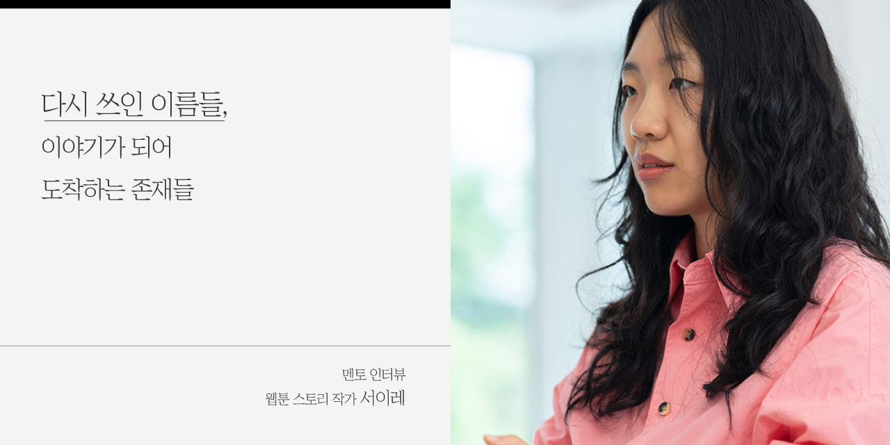
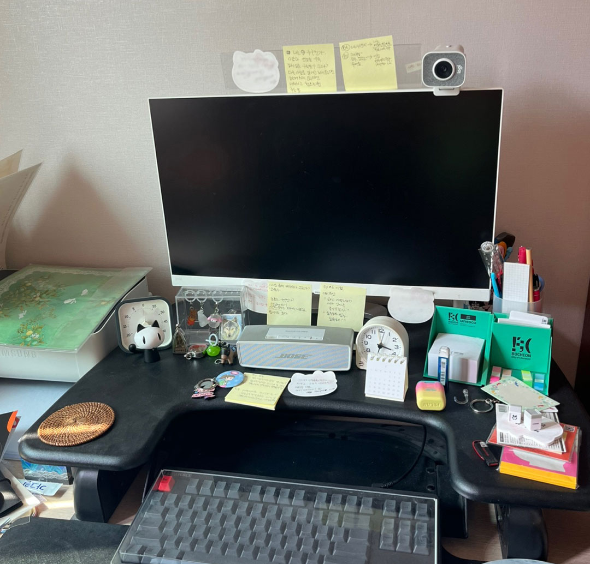
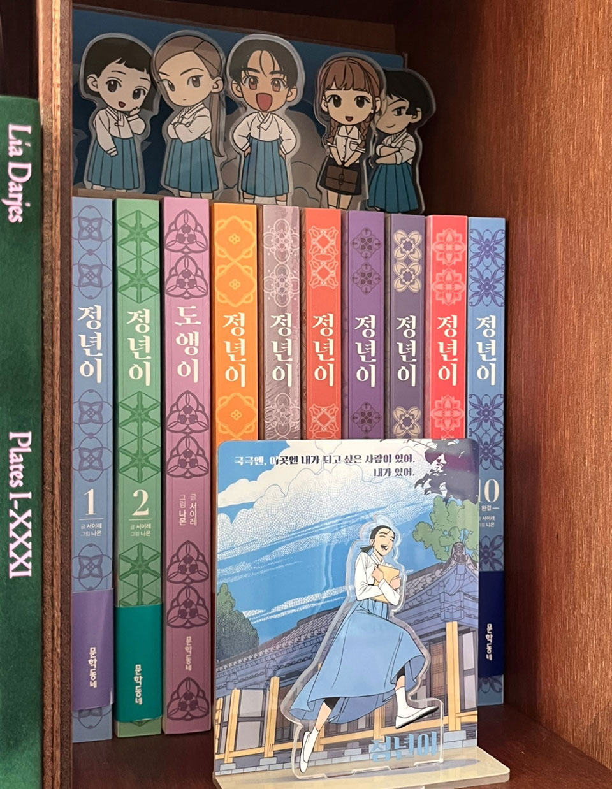
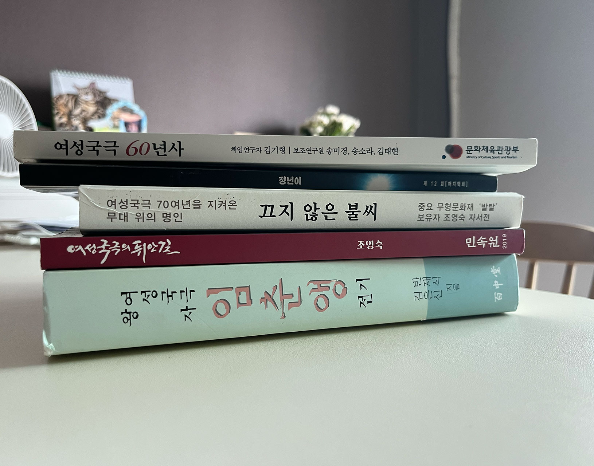
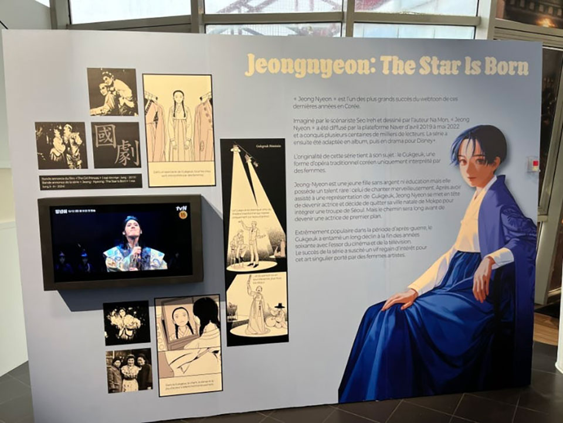
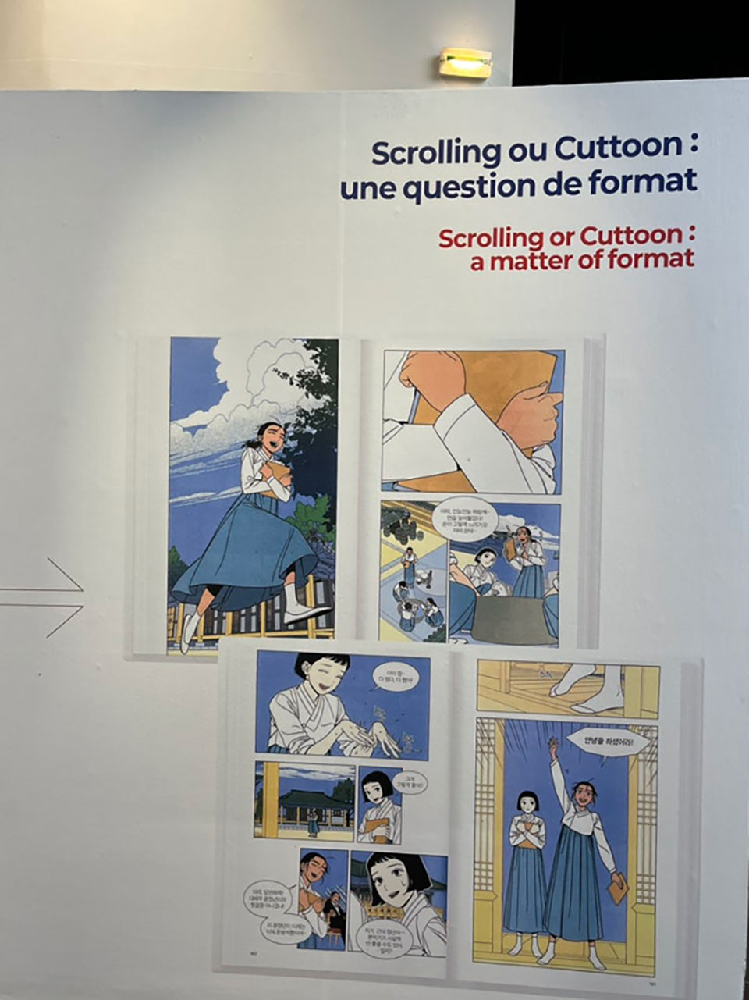
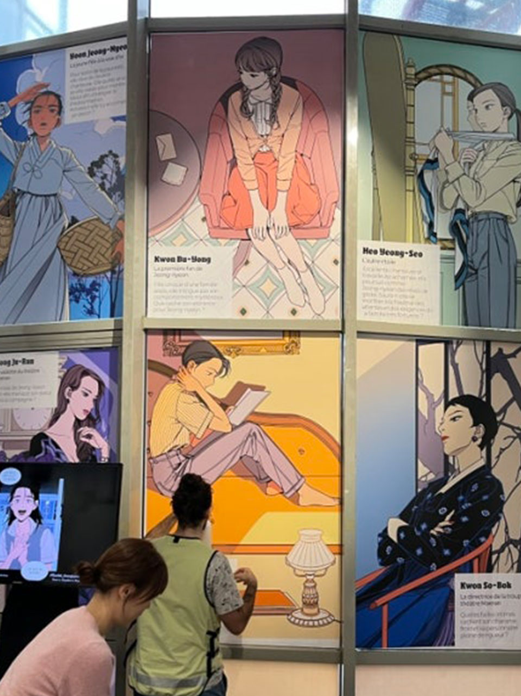

잊힌 존재에게 목소리를 부여하고, 익숙한 풍경에 낯선 결을 남기는
일. 서이레 작가에게 글쓰기란, 침묵에 잠긴 이들을 불러내는 조용한
연대이자, 세계에 균열을 내는 질문이다. 뚜렷한 경계 너머, 말의
틈새, 시선이 닿지 않던 그 어둑한 곳에서 그는 인물의 생을 길어
올리고 이야기를 세운다. 뭔가를 빼앗기고 결핍을 안고 있는 존재에서
출발하는 그의 이야기는, 웹툰이라는 매체를 통해 독자들에게 말을
걸어온다. 그가 지어 올린 세계 속에서 우리의 시선은, 지금까지 미처
닿지 못했던 곳에 머물게 된다.
“방송국엔 내가 되어야 하는 사람이 있지만, 국극엔, 이곳엔 내가 되고
싶은 사람이 있어.” 그가 쓴 작품, 웹툰 <정년이>에서 국극단을
떠나 방송국으로 갔던 정년이가 다시 돌아오며 하는 대사다. 내가 되고
싶은 나 자신으로 살아가는 삶. 좋아하는 것들만 꿰어가며 사는 일이
쉽지만은 않다고 말하는 그는, 한때 후회가 많은 사람이었다. 스스로를
믿지 못했던 시간도 있었다. 하지만 ‘내가 나를 믿지 않으면, 누가
나를 믿어줄까?’라는 물음 끝에, 그는 조금씩 자신을 신뢰하기
시작했다. 타인의 기대나 관습보다 자신의 감각을 믿고 선택해온 길,
때로는 고집스러울 만큼 자신을 믿어온 시간이 지금의 그와 그의
작품을 만들어냈다. 그 고집은 불확실한 세계 속에서도 자신을 지켜온
힘이었다. 분명한 태도로 묵묵히 글을 써온 서이레 작가는, 오늘도
시선 너머에 있던 이들을 불러낸다. 그렇게 다시 태어난 존재들은
이야기가 되어 지금, 우리 앞에 도착한다.

Q1. 안녕하세요 작가님! 본격적으로 이야기를 나누기 전에, <석유사랑> 독자들에게 자기소개를 해주세요!
안녕하세요. 만화의 대본을 쓰는 웹툰 스토리 작가 서이레입니다. 최근작 <정년이>를 비롯해 <보에>, <소녀행>, <라나> 등의 작품을 발표했습니다.
Q2. 웹툰 스토리 작가는 구체적으로 어떤 작업을 하나요? 작가님의 하루가 궁금해요. 하루 루틴이 있다면 들려주세요.
웹툰 스토리 작가는 대사는 물론 컷에 나오는 캐릭터들의 표정과 연출까지 잡아주는 역할을 합니다. 웹툰으로 보이는 작품의 이야기를 처음부터 끝까지 모두 쓴다고 생각하시면 됩니다. 전체 스토리가 있는 기획서를 두고 그림 작가님과 충분한 합의가 이루어지면 그걸 바탕으로 본격적인 대본 작업에 들어가는 방식이에요. 저의 하루는, 되도록 해가 뜨는 아침에 일어나려고 노력하고요. 일어나면 운동을 먼저 갑니다. 지금 헬스장을 다니고 있는데 운동을 한두 시간 하고 돌아와서 점심을 먹고 오후 작업을 3~4시간 정도 합니다. 그리곤 저녁을 먹고 다시 작업을 이어가요. 늦어도 새벽 1시쯤에는 자리에 누우려고 합니다.
 서이레 작가와 함께 살아가는 고양이 덕만이
서이레 작가와 함께 살아가는 고양이 덕만이

작업 공간, 모니터에 붙은 메모지에서 창작의 흔적이 묻어난다.Q3. 학창 시절, 그림은 못 그리지만 만화를 너무 좋아해서 그림 잘 그리는 친구를 섭외해 스토리를 짜고 원고를 완성하셨다고요. 이야기를 쓰고 싶다는 욕망을 따라 꾸준히 글을 썼고, 결국 웹툰 스토리 작가로 활동하고 계십니다. 지금까지의 과정을 스스로 어떻게 받아들이고 계신가요?
‘내 고집대로 살고 있구나’, ‘하기 싫은 일을 잘 피해 가면서 살고 있구나’라는 생각이 가장 먼저 드네요. 좋아하는 일들만 꿰어가며 살아가는 게 쉽지 않은 일이죠. 저도 웹툰 작가로 데뷔하고 초반에는 아르바이트를 병행했어요. 부모님께서는 계속 다른 일을 하라고 권하셨고요. 그런데 다른 일은 정말 하고 싶지 않더라고요. 그래서 계속 버텼어요. 그렇게 버티면서 고집대로 살아왔는데, 운 좋게도 지금까지 이렇게 살아가고 있네요.
Q4. 욕망에 대한 이야기를 나눠보고 싶어요. ‘부족함도 질투도 사라지고 쓰고 싶은 욕망만 남는다’는 작가님의 산문집 속 문장에서, 바로 그 욕망이 사람을 살아가게 하는 원동력이라고 느꼈거든요. 쓰고 싶은 욕망을 아주 강렬히 느꼈던 최초의 순간을 기억하시나요?
제가 만든 이야기를 처음으로 다른 사람들에게 보여준 건 중학생 때였어요. 해리포터 팬카페에 팬픽을 올렸었죠. 읽어주는 사람은 많이 없었지만, 그걸 쓰는 시간이 정말 재미있었어요. 열 편짜리 이야기를 계속 쓰고 싶었고, 그 이야기에 대한 생각을 멈추지 않았던 순간이 떠오릅니다. 중고등학생 시절 내내 이런 감각을 가지고 있었어요. 수업 시간에도 문제집 귀퉁이에 쓰고 싶은 이야기를 적는 학생이었죠. 선생님께 걸려서 혼난 적도 있고요.
Q5. 욕망은 나를 앞으로 나아가게 하는 힘이 되어주기도 하지만, 동시에 나를 집어삼키는 힘이 될 수도 있죠. 무언가를 잘하고 싶다는 욕망을 어떻게 잘 다룰 수 있을까요?
진짜 어려운 것 같아요. 예전에는 다른 웹툰 작품을 잘 못 봤어요. 잘 썼다는 작품을 보기 전에 먼저 질투심부터 올라오는 게 스스로도 부끄러웠어요. 그런데 결국엔, 내가 그런 사람이라는 걸 인정하게 됐어요. 그리고 잘 쓴 작품은 잘 썼다고 인정하자, 그렇게 생각하니까 한결 편하게 받아들일 수 있더라고요. 그렇게 하나둘 보기 시작했는데, 너무 재미있는 거예요. 갖고 있던 질투심이 다 사라질 정도로요. 그러면서 ‘나도 빨리 뭔가를 쓰고 싶다’, ‘좋은 작품을 만들어서 사람들에게 보여주고 싶다’는 마음이 더 커졌어요. 저는 그게 일종의 향상심이라고 생각해요. ‘지금 내가 쓰는 게 별로인 것처럼 느껴져도, 어제 쓴 것보단 나을 거야. 그리고 내일 쓸 글은 오늘 쓴 글보다 좋을 거야.’ 그런 마음으로 계속 작업을 이어가고 있는 것 같아요.
Q6. 작가님의 작품에서는 유독 ‘욕망’과 ‘사랑’이 크게 느껴져요. 자신이 가진 욕망을 끝까지 따라가보는 인물들이 사는 세상. 삶에 대한 무조건적인 믿음도 느껴지고요. 자기 자신에 대해서 불안해하거나 주저하고 고민하는 사람들에게 도움이 될 만한 어떤 말들을 할 수 있을까요?
중고등학생 때 저는 항상 스스로에게 ‘후회하지 말자’는 말을 되뇌며 살았어요. 저는 후회가 많은 사람이었거든요. 어떤 선택을 한 뒤에도 계속 그 선택을 곱씹고 반추하곤 했는데, 그게 참 싫었어요. 지금은 선택에 대해 크게 후회하지 않고 살아가고 있는데, 이런 마음가짐이 저에게는 꽤 건강하게 작용한 것 같아요. 결국 ‘후회하지 말자’는 말이 ‘나 자신을 믿자’는 말로 다가왔거든요. 내가 나를 믿지 않으면 누가 나를 믿어줄까, 나조차도 나를 못 믿는데 누가 내가 가는 길을 믿어주겠나, 그런 생각이 들었죠. 그래서 저는 우선 자기 자신을 믿어보라고 말씀드리고 싶어요. 설령 내가 믿었던 길이 틀렸거나, 소위 말하는 ‘실패’를 겪는다 해도 괜찮다고요. 다른 길로 가면 되니까요. 무언가를 충분히 해봤다면, 나중에 다른 선택을 하는 것도 전혀 잘못된 게 아니니까요. 그러니 스스로를 믿고 선택하는 일을 두려워하지 않으셨으면 좋겠어요.
Q7. 작가님에게 이야기를 촉발시키는 것이 무엇인지 궁금해요. 특정한 상황에 놓인 인물에서 시작하나요? 또는 어떤 장면이나 생생한 감각에서 시작되나요? 이야기를 만들어가는 구체적인 방식을 들려주세요.
저는 보통 인물에서 이야기를 시작하는 편이에요. 무언가를 빼앗긴 인물, 부족함이나 결핍이 있는 인물. 그런 인물로 시작하면, 그 인물이 맞닥뜨릴 장면들이 자연스럽게 따라오더라고요. 예를 들어 <정년이>의 경우, ‘여성국극이라는 소재에서 출발한 이야기를 이끌 주인공은 어떤 사람이어야 할까’, ‘그 인물은 왜 여성국극을 하려고 할까’를 고민했을 때, ‘돈을 많이 벌고 싶어서’라는 이유가 가장 재미있을 것 같았어요. 실제로 당시 여성국극 스타들이 큰 돈을 벌었다고 하더라고요. 보는 이들에게도 설득력 있고 재미있게 다가갈 수 있을 것 같았죠. 하지만 주인공의 목표가 단지 돈을 많이 버는 것에서 끝나야 할까, 이 이야기에서 깨닫는 게 그것이 전부일까, 하는 생각이 들면서 점점 이야기를 채워나가게 됐어요. 처음으로 무대에 올라 다른 사람들과 함께 작품을 만들어내는 장면, 정년이와 부용이의 관계를 보여주는 바닷가에서 뺨을 때리는 장면 같은 것들이 특히 쓰면서 재미있었고, 저한테도 굉장히 중요한 장면들이었어요. 처음에는 인물에서 출발하지만, 쓰다 보면 결국 어떤 장면들을 향해 달려가고 있더라고요.
Q8. <정년이>가 정말 많은 사랑을 받았어요. 웹툰 연재 이후 국립창극단의 창극으로 무대에 올랐고, 국가유산진흥원의 특별극으로도 만들어졌죠. 작년에는 드라마로도 제작돼서, 더 다양한 연령층의 시청자들이 정년이를 만날 수 있었고요. 이렇게 <정년이>가 여러 매체를 통해 새로운 생명력을 얻고 뻗어나가는 모습을 보면서 어떤 마음이 드시는지 궁금해요.
다른 사람이 만든 다른 작품이라는 느낌이 들어요. 창극이든 드라마든, 정말 많은 창작자들이 모여서 하나의 작품을 만들어가잖아요. 제가 원작을 만들었지만, 어느 순간부터는 완전히 독자적인 생명력을 갖고 창극은 창극대로 드라마는 드라마대로 자기만의 길을 가는 것 같거든요. 그래서 이걸 제 작품에서 뻗어나간 ‘결실’이라고 느끼기보다는, 제가 갖고 놀던 공을 다른 사람들에게 건네준 느낌에 더 가까워요. 공을 받은 사람들이 각자 자기 방식으로 새로운 게임을 만들어가는 모습을 지켜보는 기분이랄까요.

<정년이> 단행본
<정년이> 참고자료Q9. ’1950년대’라는 시간, ‘여성국극’이라는 낯선 배경 속 이야기로 2020년대를 살아가는 사람들을 초대하기 위해, 가장 중요하게 생각하신 부분은 무엇이었나요?
구조가 중요했어요. 독자들에게 익숙하고, 쉽고, 재미있게 느껴질 수 있는 구조를 가져오자고 생각했죠. 어떤 재능은 있지만 체계적인 교육은 받아본 적 없는 주인공이 성장해나가는 이야기 구조잖아요. 여기에 라이벌 캐릭터가 붙고, 선배 캐릭터, 어머니의 과거 같은 요소들이 더해지면 사람들이 이야기에 자연스럽게 몰입할 수 있을 거라고 생각했어요. 그다음으로 의미화하는 단계에서 중요하게 생각했던 건, 여성국극이 지금 우리에게 어떤 의미를 가질 수 있을까 하는 점이었어요. 1950년대에 큰 인기를 끌었던 여성국극을 오늘날의 시선으로 다시 바라봤을 때, ‘여성이 남성을 연기한다’는 점에서 젠더의 무법성을 중요하게 취했어요. 여성의 남성성, 남성의 여성성을 자연스럽게 표현해보고 싶었고, 그 안에서 당시 국극단 내부의 관계나 배우와 팬 사이의 친밀한 관계를 바탕으로 동성 친밀성을 현대적으로 풀어볼 수 있겠다는 생각도 했어요. 분명히 존재했지만 지금 우리에게 전해지지 않았던 존재들을, 이 이야기를 통해 다시 불러오고 지금과 연결할 수 있겠다고 생각하며 작업했어요.
Q10. 글을 쓰고 작품을 만드는 일이 목소리를 부여하고 질문을 던지는 일이라면, 지금까지 발표하신 <보에>, <소녀행>, <라나>, <정년이>를 통해 작가님은 어떤 존재들의 목소리를 전하고 싶으셨고, 어떤 질문을 세상에 던지고 싶으셨나요?
<보에>는 경쟁 사회에서 도태되었다고 느끼는 사람들을 불러들이고 싶었어요. 주인공인 경이는 유리천장을 실감하고 퇴사를 선택한 친구를 보며 회사 생활에 대한 고민을 시작하고, 겨운이는 예고에서 치열한 입시 경쟁에 시달리다 실패하고 자신의 앞날을 깜깜하게 여기는 캐릭터죠. 그렇게 실패했다고 평가받는 사람들이 모여서 다시 뭔가를 시작해보는 모습을 그리고 싶었어요. <소녀행>은 사랑이 과연 무조건 좋은 감정인가? 라는 질문에서 시작했어요. 사랑은 사람을 상처 입히고 괴롭게 만들기도 하잖아요. 주인공 혜에게 걸린 저주는 결국 사랑 때문에 생긴 거였지만, 그럼에도 불구하고 다시 누군가를 껴안고 사랑하길 멈추지 않는 용기를 보여주고 싶었어요. <라나>에서는 자기 이름 대신 자기 자식의 이름으로 호명되는 사람들의 이야기를 하고 싶었어요. 성모 마리아가 그렇고, 우리 어머니들이 그렇잖아요. 내 몸에 있는 다른 존재가 아니라, ‘내가 누구인지’를 알고 싶어하는 마음, 나 자신을 탐구하고 찾아가는 모험담을 보고 싶어서 시작했어요. <정년이>는 앞서 말씀드렸던 것처럼, 지금은 잊힌 여성국극 이야기를 다시 꺼내보고 싶었고요.
Q11. 글을 쓰며 질문하고 답을 찾아가는 과정에서 회의감을 느끼신 적은 없나요?
사실 거의 매주 그랬던 것 같아요. 마감할 때마다 ‘내가 지금 잘 하고 있는 게 맞나’, ‘이게 정말 세상에 필요한 이야기였나’라는 생각을 했던 것 같아요. 그럼에도 불구하고 연재를 마칠 수 있었던 건, 일단 계약이 되어 있고(웃음) 시작을 했으면 책임감을 갖고 끝까지 해야 한다는 생각이 컸기 때문이에요. 그게 내 작품과 작품을 발표할 수 있게 해준 플랫폼 그리고 독자들에게 마땅히 해야할 일이라고 생각했어요.
Q12. 외부로 향하던 질문을 내면으로 돌려보면, 작가님은 평소 스스로에게 어떤 질문을 하며 살아가고 계신가요?
요즘엔 ‘무엇으로 내 삶을 채워나가야 할까’를 자주 생각해요. 서른을 좀 넘기고 나니까, 이제부터는 내가 직접 선택한 것들로 내 삶이 꾸려질 거라는 실감이 들어요. 지금까지는 태어난 곳이나 부모님처럼, 내가 선택하지 않은 것들로 삶이 채워졌지만, 이제는 그렇지 않잖아요. 그래서 ‘어떻게 하면 내 삶을 좀 더 책임감 있게 꾸려갈 수 있을까’를 고민하게 돼요. 저는 제 삶을 뭔가 깨끗하고 예쁘고 값비싼 것들로 꾸미기보다는, 좀 아프고 금방 쓰러지고 더럽고 냄새나는 것들로 채우고 싶어요.
Q13. 웹툰은 한 컷, 한 마디의 밀도가 굉장히 높죠. 웹툰이기 때문에 가능한 것이 있다면 어떤 것들이 있을까요? 작가님이 생각하는 웹툰의 매력은 무엇인가요? 추천하고 싶은 작품이 있다면 함께 소개해주세요.
장르적인 특징으로 접근해서 말하자면, 웹툰은 굉장히 다양한 이야기가 허락되는 장르예요. 웹소설은 어떤 정해진 문법들이 있죠. 드라마나 영화는 들어가는 자본이 어마어마하고 다룰 수 있는 소재에 어느 정도 장벽도 있고요. 그런데 웹툰은 상대적으로 적은 자본으로도, 하고 싶은 이야기를 보다 자유롭게 풀어낼 수 있다는 점이 가장 큰 매력이예요. 작품을 소비하는 입장에서 웹툰의 매력을 꼽자면, 일단 한번 보기 시작하면 멈출 수가 없다는 것이죠. 화면을 주저 없이 스크롤하면서 몰입하게 되는 그 속도감이 굉장히 재미있잖아요. 또 조금 어렵고 까다로운 이야기도 만화라는 형식에 담아놓으면, 그 장벽이 좀 낮아지는 느낌이 있어요. 추천하고 싶은 웹툰은 <아 지갑놓고 나왔다>예요. 주인공인 여자아이가 귀신인데, 미혼모의 딸로 태어나 죽은 뒤에도 엄마가 너무 걱정돼서 저승으로 가지 못해요. 딸과 어머니 사이의 복잡미묘한 관계를 잘 보여주죠. 색감도 흑백 위주인데, 선만으로도 너무나 잘 표현하시고, 스토리도 완벽하고, 연출도 웹툰의 스크롤 방식을 탁월하게 활용하셔서 정말 재미있게 본 작품입니다.

2025 앙굴렘 국제 만화 축제 'K-웹툰 시대' 기획 전시 속 <정년이>
2025 앙굴렘 국제 만화 축제 'K-웹툰 시대' 기획 전시 속 <정년이>
2025 앙굴렘 국제 만화 축제 'K-웹툰 시대' 기획 전시 속 <정년이>Q14. 학교나 도서관 등에서 강의도 많이 하고 계시지요. 강연 중에는 주로 어떤 질문을 받으시고, 어떻게 답하시는 편인가요? 특별히 기억에 남는 순간이나 사람이 있다면 소개해주세요.
창작을 직접 하고 싶어서 오시는 분들도 있지만, 꼭 그렇지 않더라도 작품을 더 이해하고 싶어서, 또는 창작자에 대한 궁금증 때문에 오시는 분들도 많아요. 이런 분들을 보면 늘 감사한 마음이 들어요. 결국 창작자는 ‘봐주는 사람들’ 덕분에 살아가는 거잖아요. 저도 그런 분들이 저를 먹여 살리고 있다고 생각해요.(웃음) 기억에 남는 분은 강연에서 만난 분은 아니고, 한 중국인 독자에게서 메일을 받았어요. 제 작품은 아직 번역본이 없는데, 그분이 한국어로 된 <정년이>를 처음부터 끝까지 다 보셨다는 거예요. 일일이 번역기를 써가면서요. 심지어 작품이 너무 좋아서 제 산문집까지 구해서 그것도 전부 번역해서 다 읽으셨대요. 그분이 보내주신 메일을 읽는데 너무나 감사한 마음이 들었어요. A4 두 장이 꽉 차도록 긴 편지였는데, 마치 오래 알고 지낸 친구가 보내온 편지를 읽는 것 같았어요. 저에게 정말 큰 힘이 됐어요.
Q15. 차기작으로 이주 아동 이야기를 담은 작품을 준비중이시라고요.
네, 이주 노동자나 미등록 이주 아동에 관련된 책들을 읽고 있고, 우리가 흔히 ‘다문화 가정’이라고 부르는 배경의 청소년들이 쓴 에세이도 열심히 보고 있어요. 인터뷰도 다녔고요. 이 작품을 준비하면서 계속해서 떠오르는 질문은, ‘어떤 사람을 한국인이라고 부를 수 있을까?’예요. 그리고 ‘어떤 사람을 어떻게, 무엇으로 정의할 수 있을까?’라는 질문도 함께요. 정체성이 어떻게 생기고, 또 어떻게 유지되는지에 대한 질문이에요. 한국인이라는 게 뭐지?, 나는 왜 나를 한국인이라고 생각하지?, 누군가를 한국인이 아니라고 판단하는 건 누구의 권한이고, 어떤 구조와 권력 안에서 그런 경계가 만들어지는 걸까. 그런 생각들을 계속 하고 있고, 더 많이 공부해야겠다는 생각이 들어요.
Q16. 여전히 사람들은 좋은 이야기가 나오기를 기다리고 있습니다. 작가님이 생각하는 ‘좋은 이야기’는 어떤 이야기인가요? 그리고 앞으로 어떤 작품을 세상에 내보이고 싶으신가요?
저는 보고 나서 할 말이 많은 이야기가 좋은 이야기라고 생각해요. 비판하고 싶은 점이 많아서일 수도 있고, 너무 좋아서일 수도 있고, 그 두 가지가 함께일 수도 있어요. 어쨌든 할 말이 많다는 건 그만큼 작품이 가진 에너지가 크다는 거잖아요. 창작자가 여러 겹의 레이어를 작품에 담아냈다는 뜻이기도 하고요. 그런 작품을 보고 나서 친구들과 이야기를 나누는 시간은 너무 즐겁죠. 또 다른 창작으로 이어지기도 한다는 점에서, 보고 나서 이야기할 것이 남는 작품이 좋은 작품인 것 같습니다. 저도 그런 작품을 만들고 싶어요.
Q17. 동시대를 살아가는 사람들, 그리고 <석유사랑> 독자들에게 전하고 싶은 말씀이 있다면요?
이야기를 쓰는 행위에도 사람이 있지만, 그 이야기를 읽는 행위에도 사람이 있잖아요. 저도 오랫동안 이야기를 쓰고 싶지만, 그만큼 독자분들도 오래오래 이야기를 읽고, 사람을 이해하고, 사람과 함께하는 걸 누리셨으면 좋겠어요. 요즘은 긴 이야기를 보기 힘들어한다고들 하잖아요. 길든 짧든, 내가 즐겁게 볼 수 있는 이야기들을 만나서 오래오래 누리셨으면 합니다. 있었으면 좋겠습니다.